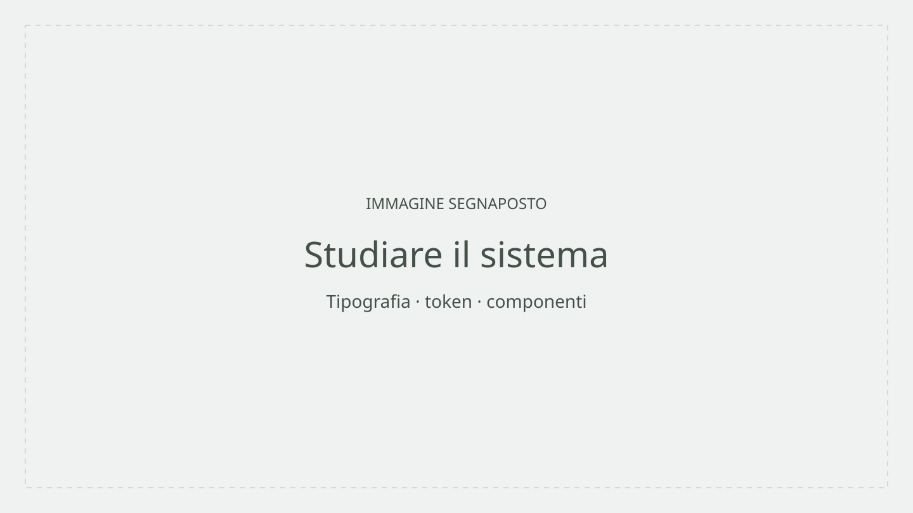

Barone Sara • UX UI DESIGN • 2026
The retro closet
Un archivio digitale della moda vintage: quattro decenni, quattro identità visive, un'unica piattaforma di ispirazione.

Studentessa
Sara BaroneCorso
ITS Web Design e Strategie DigitaliModulo
UI/UX DesignScuola e anno
ITS Academy I-CREA, CFP Bauer Milano · 2026Concept
Un archivio, più livelli di lettura
Una buona interfaccia permette di capire dove andare dopo. The Retro Closet nasce dall'esigenza di rendere esplorabile un archivio di moda vintage organizzato per decennio — non una semplice galleria, ma un sistema che guida l'utente tra codici estetici molto distanti tra loro.
Il contenuto della mia reinterpretazione
La ricerca storica ha preceduto ogni scelta progettuale. Per ciascun decennio ho identificato le influenze culturali dominanti, i materiali tessili tipici, le icone di riferimento e la palette cromatica caratteristica. Da quella ricerca è emerso il design system. Il contributo principale ha riguardato la progettazione dell'identità visiva per ogni era — un sistema cromatico e tipografico coerente — e la definizione di una navigazione che rendesse immediatamente riconoscibile il contesto temporale in cui l'utente si trovava. Per un valido progetto serve un approccio sistematico e coerente: ogni scelta deve essere giustificabile. Questo vale tanto per il colore quanto per la gerarchia tipografica, il nome delle sezioni e il peso degli elementi interattivi.
Dal progetto al Case study
Anche questa pagina è un progetto
Per raccontare Sentcell ho progettato una seconda interfaccia: questo case study. Ho studiato Primer Brand e combinato i suoi componenti per dare una forma coerente al racconto.



-
Sono partito dalla documentazione e dalle pagine GitHub: tipografia, colori, spazi e comportamenti formano un insieme di decisioni. Ho usato Primer Brand come vocabolario per costruire la mia pagina.
-
Ho selezionato gli elaborati e dato a ogni contenuto una forma: Pillar per i livelli di lettura, Tabs per le viste, Testimonial per una riflessione. Gerarchie e spazi collegano i capitoli; sul mobile la composizione cambia disposizione.
-
Il lavoro continua nel browser: controllo la leggibilità, i collegamenti e i controlli da tastiera a larghezze diverse. La prova pratica richiede anche di saper spiegare e modificare il codice, mantenere Figma e sito coerenti e pubblicare il lavoro con GitHub Pages.